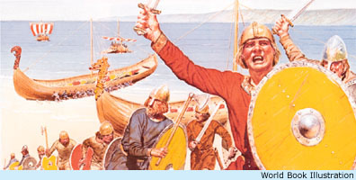
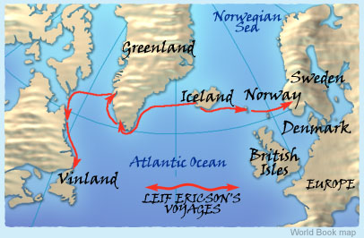

The Icelandic sagas describe Leif Ericson as "a large and powerful man, and of a most imposing bearing, a man of sagacity, and a very just man in all things."
Here's more about Leif's journeys.
Leif Ericson sails in search of a mysterious land to the west of Greenland and becomes the first Norseman to set foot on its shores.

Coming ashoreIn the farms and villages of the Norse was much murmuring of voyages of discovery and of a new land seen and told of by Bjarni Herjolfsson. Leif, the son of Eric the Red, heard this talk and bought for himself Bjarni's ship and gathered a crew of 35 men. The men set out across the waves and found the land which they sought. But upon setting their feet ashore, saw they no meadows there; but instead a flat rock stretching from the sea to great ice mountains that arose far inland. Then said Leif, "It is not with us as with Biarni, for we have seen this land and now go upon it." But the land, it seemed, was entirely lacking of benefits.
The strange new land proves to be so bountiful and agreeable that Leif and his men spend the winter there. Into a bay they sailed, between the island and a cape, which thrust from the land on the north. It was not long thereafter that they erected a large house to accommodate themselves for the winter. The salmon showed themselves in large numbers, both in the river and in the lake, these fish being larger and fatter than any they had ever seen. The country's bounty was then further proven, for no frost settled in the winter, the grass remained green, and the cattle could forage to their fill all winter long.
The abundance of wild grapes or berries in the new land inspires Leif Ericson to name it Vinland.

Voyages of discovery and conquestLeif directed his crew to divide their labors, and each day either to gather grapes or cut vines and fell trees, with the object of obtaining a cargo of these for his ship. The shipmates toiled accordingly until their landing-boat was filled with grapes. When the spring came, the company filled the ship, and went away from the new land, and from the fruit of its soil gave Leif the land a name, calling it Vinland.